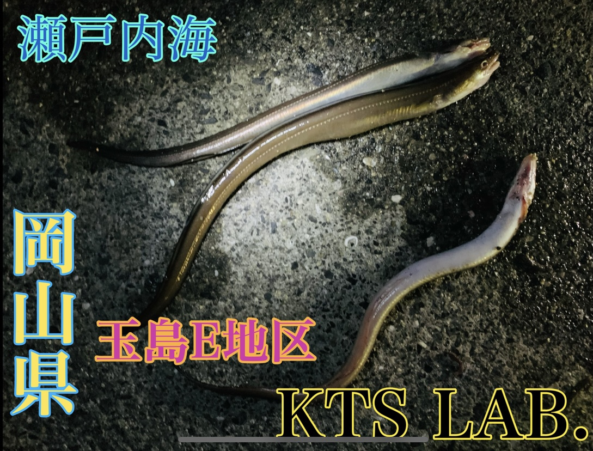

カテゴリー: survival
-

《免許不要》アツがナツいぜ、濡れ濡れ2馬力ゴムボート使ってみた結果 岡山・牛窓
こんにちは😄 ワシじゃ、岡山の釣りガイジじゃ。 忙しい7月を乗り越え、8月半ば、 1ヶ月ぶりの釣りじゃぁぁあ！辛抱たまらんッ！漏れる！！！！ と、いうことでという事です。 今回仕入れたのがこちら、 30キロ以上ある、クソ […]
-
 真夏の夜の岡山アナゴ無双《岡山県・玉島》
WRYYYYYYYYYYY どうも、岡山の釣りガイジです。 今月は結構釣りにいってます。 今回は岡山の釣りガイジのふるさと岡山です。 向かうのは玉島E地区、 チヌ、シーバスを狙って行ってきました。 総社の釣具のタイムで青 […]
-

爆釣！桂浜花街道気持ち良すぎだろ。《高知県・太平洋》
ごきげんよう。一気呵成岡山の釣りガイジです。 あっついですわ～˚✧₊⁎❝᷀ົཽ≀ˍ̮ ❝᷀ົཽ⁎⁺˳✧༚ 6月も末、山本元柳斎重國が卍解したのかと言う暑さ今日この頃、炎暑酷暑のみぎり、皆様のご健勝とご自愛をお祈り申し上げ […]
-

舞鶴河口デカアジ電気ウキ《舞鶴・京都》
こんにちは💪😇💪 守護聖天岡山の釣りガイジじゃ 先日夜、ふと、 家の裏のコンビニにコーヒーと甘いものでも買いに行こうと、、、 思ってやってきてしまいました日本海。 （高速45分） いやー足が滑った。釣りの予定は無かったん […]
-

敗北釣り場調査記事・大ナマコしかおらん《犬島》
犬島釣り場調査 やぁ✋ 僕は岡山の釣りガイジ。 5月某日、瀬戸内海、とある島に用事があったので、 島に行くなら釣りをしなければならない。 ガイジがまず向かったのはアングラーズ野里店 今回は渡し船を使って島に向かうわけだが […]
-

春のガイジ風チヌのポワレ〜BCAAと共に〜
青葉が目にまぶしいこのごろ、皆様にはますますご健勝のこととお慶び申し上げます、 岡山の釣りガイジでございます。 前回の記事で釣ってきた、武庫川のチヌ、 https://ktslab.jp/?p=680 今回は調理です、ポ […]
-

《チヌを探しに》淀川河口・武庫川河口・夢舞大橋・常吉大橋
おっすおっすオラ岡山の釣りガイジー(=ﾟωﾟ)ﾉ 今回も釣りを楽しんできました。(^o^) 先日の、淀川河口ナイトフィッシングの釣果報告ゾ_(┐「ε:)_ 日曜、ラボメンと仕事の終わりに呑みか釣りをしようという話で、、、 […]
-

日本海・栗田漁港/新春エクストリーム満天星空ファッキンウミケムシ夜釣り《釣り場調査》
待たせたなぁ～ワシがベーシストのｫ～♪ あの あの あの 岡山の釣りガイジじゃ！ 以後お見知り置きを。 （氣志團: ツッパリHigh School Musical (登場編）より） 某4月3日、日曜日の晩。 日中仕事中、 […]
-

釣り場記録メモ《泉大津〜貝塚〜泉佐野》
テトラポットの奇術師です。 段々暖かくなってきました。いかがお過ごしでしょうか。私は春になるとアタマが悪くなります。 前回の記事では私と岡山の釣りガイジくんで大阪の釣り場を開拓していました。 今回はその補足情報を少し。 […]
-

Re:釣果ゼロから始める武庫川フィッシング《武庫川河口・西宮ケーソン》
ナイトフィッシングイズグッド どうも、こんばんは岡山の釣りガイジです。 昨日の記事の続きです、 今回は、武庫川河口からお送りしております。 テトラポッドの奇術師君と別れて、ガイジが向かったのはフィッシングマックス武庫川店 […]